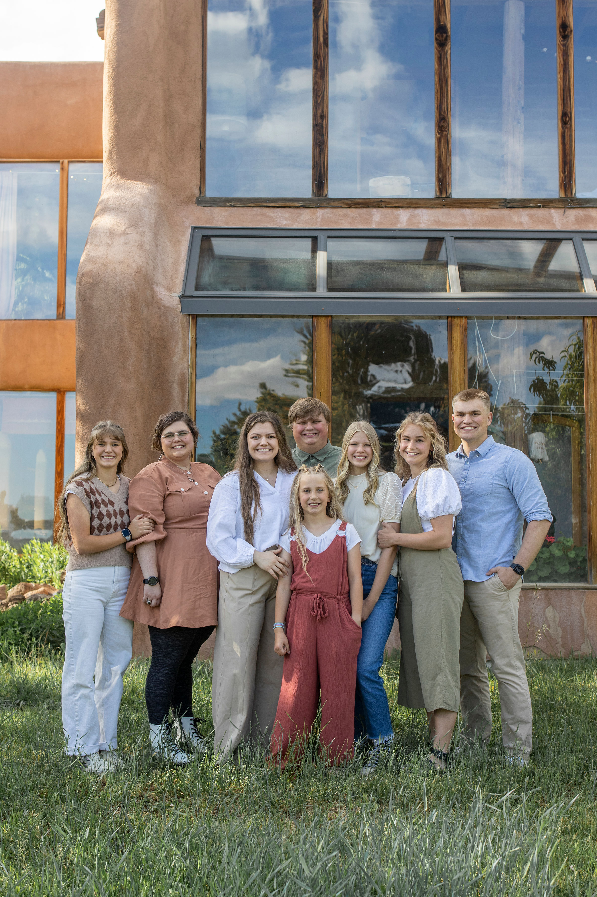
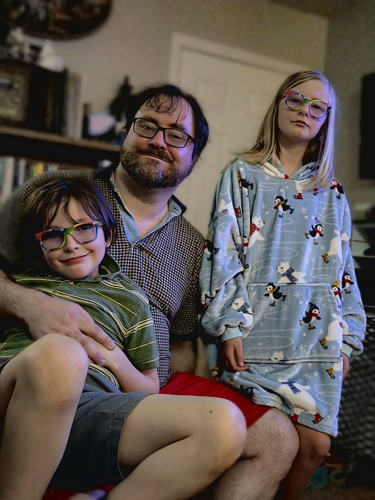
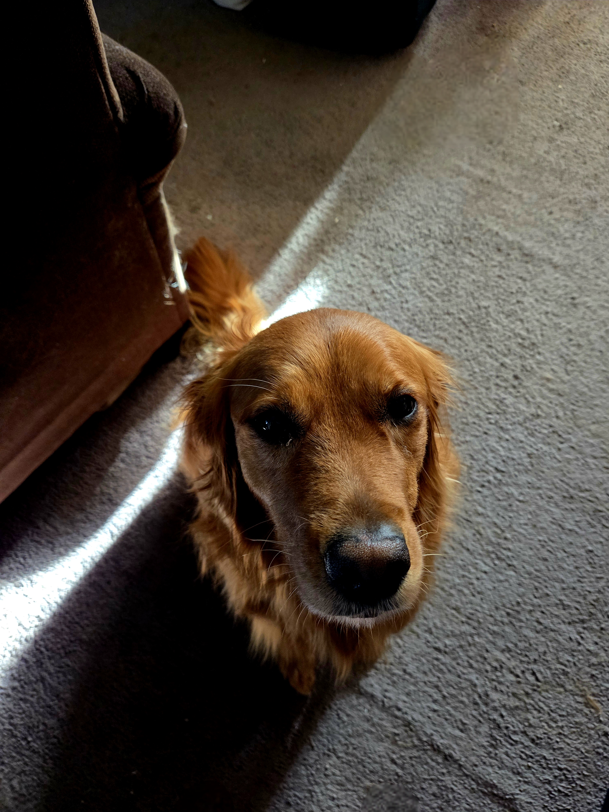

I am from Colorado, born and raised. I am the oldest of eight children. There are 6 girls and two boys. The boys are sandwiched in between the girls. I grew up being the oldest of 7, then my parents had a surprise baby when I was 19.

(From left to right: Delaney, Taylor, Madison, Dylan, Everlee, Harlee, Kenna, and Cameron)
I moved to Pocatello, Idaho in 2013 after I graduate high school. I wanted to live in Idaho for a short time before I went to school for nursing, instead I met my husband and was married in 2014 and had my daughter 9 months and 1 day after the wedding. We moved to Twin Falls in 2015, Twin Falls is where my husband spent the most time growing up and his parents are still here. In 2018 we welcomed our second child, a boy, and completed our family in 2021 by adding our dog, Topaz.


I have been at CSI since 2023, I am studying Network Systems Technician, Cyber Security and Programming, and Computer Support Technician. I have enjoyed studying for my degree and getting to understand different aspects of computers and technology.
In the words of Kip Dynamite I love technology!
Email: tsignsmcmurtry@csi.edu